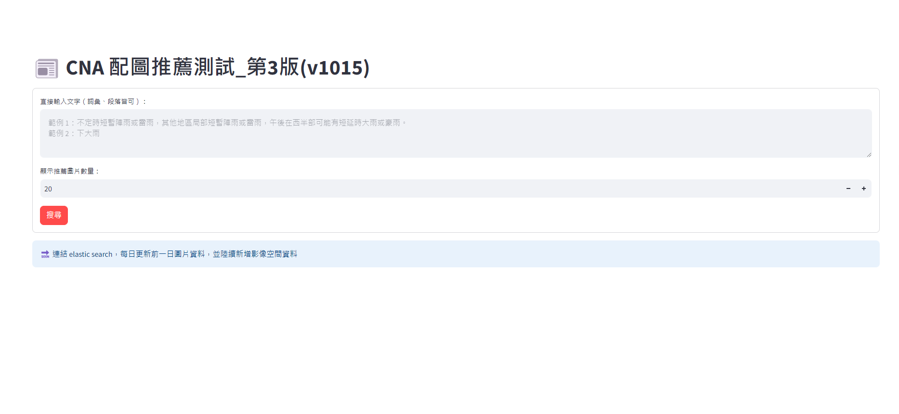
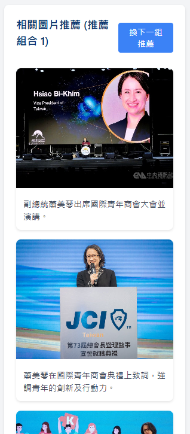

中文 NLP 與影音推薦：讓新聞素材更容易被找到Chinese NLP and media recommendation: making newsroom archives searchable
新聞室累積了大量文章、照片與影片，但內容如果缺乏一致的標記，就很難在下一則新聞中重新使用。我建置中文斷詞、關鍵字與實體辨識服務，並把相同的結構化思路延伸到配圖與片庫推薦。Newsrooms accumulate vast archives of stories, photos and footage, but material without consistent metadata is hard to reuse. I built Chinese segmentation, keyword and entity services, then applied the same structured approach to photo and video recommendation.
中文文章預處理Chinese article preprocessing
我將中央社客製的 CNA Articut 斷詞引擎、媒體實驗室自建詞典與新聞分類規則整合為 FastAPI 服務。文章送入後，系統會處理相對時間、斷詞、關鍵字與 NER，辨識人物、事件、組織、地點及設施，再產生摘要與 embedding，最後寫入 Elasticsearch。
I integrated CNA’s customised Articut segmenter, Media Lab dictionaries and newsroom classification rules into a FastAPI service. Each story goes through relative-time normalisation, segmentation, keyword extraction and NER for people, events, organisations, places and facilities, followed by summaries and embeddings before indexing in Elasticsearch.
- 新聞詞典Newsroom dictionaries可持續更新人名、組織與專有名詞，並讓編輯手動補入關鍵字。Continuously updated names, organisations and domain terms, with support for editor-supplied keywords.
- 一致的 APIConsistent APIs將斷詞、關鍵字、NER 與完整預處理拆成可供不同產品重用的端點。Reusable endpoints separate segmentation, keywords, NER and the full preprocessing pipeline.
- 搜尋基礎Search foundation結構化欄位與 embedding 一起進入 Elasticsearch，支援後續的搜尋、推薦與事件關聯。Structured fields and embeddings enter Elasticsearch to support retrieval, recommendation and event relationships.
配圖推薦Photo recommendation
系統先用 GPT-4o Vision 將圖庫照片轉為結構化描述，包括人物、組織、事件、照片類型、人物呈現方式與場景，再建立 embedding 並寫入 Elasticsearch。編輯輸入新聞內容後，服務同時依全文、關鍵重點、人物、場景與示意圖等角度搜尋，再依新聞情境重新排序。
GPT-4o Vision first converts archive photos into structured descriptions—people, organisations, events, image type, subject composition and context. The service embeds and indexes that metadata in Elasticsearch. Given a story, it searches across the full text, key points, people, scenes and illustrative images, then reranks results for the editorial context.
搜尋 API 支援 SSE 串流，各類結果完成後即可先送到前端，編輯不必等所有檢索路徑結束才看到第一批建議。
The search API supports SSE streaming, so each result category reaches the interface as soon as it is ready instead of making editors wait for every retrieval path.


片庫影片推薦Video archive recommendation
影片無法像文章一樣直接全文檢索。我把每支影片拆成可搜尋的代表畫面：以 FFmpeg 萃取關鍵影格，用 SSIM 移除高度相似的畫面，再交由 GPT Vision 描述影格內容。描述文字經 embedding 後寫入 Elasticsearch，查詢結果再聚合回影片，讓編輯從文字需求找到片庫素材。
Video cannot be searched like article text. I turned each clip into searchable representative frames: FFmpeg extracts keyframes, SSIM removes near-duplicates, and GPT Vision describes what remains. Those descriptions are embedded and indexed in Elasticsearch, then search results are grouped back into their source videos so editors can find footage with a text query.
- 下載片庫影片並保留影片識別資訊。Ingest archive footage while preserving clip identifiers.
- 萃取場景關鍵影格，以 SSIM 去除重複畫面。Extract scene keyframes and remove visual duplicates with SSIM.
- 以 GPT Vision 產生可搜尋的繁體中文內容描述。Use GPT Vision to produce searchable Traditional Chinese descriptions.
- 建立 embedding、寫入 Elasticsearch，並將命中影格對應回影片。Create embeddings, index them in Elasticsearch and map matched frames back to clips.
共通設計Shared design
三套服務的共同核心，是先將新聞語言與視覺素材轉成可檢索、可比較的結構，再用搜尋系統穩定地找回原始資料。LLM 負責理解與描述，Elasticsearch 負責索引與檢索，結果始終回到中央社的文章、照片或影片來源。
All three services first turn newsroom language and visual material into structures that can be searched and compared, then use retrieval to return the original source reliably. LLMs handle interpretation and description; Elasticsearch handles indexing and retrieval; every result points back to a CNA story, photo or video.